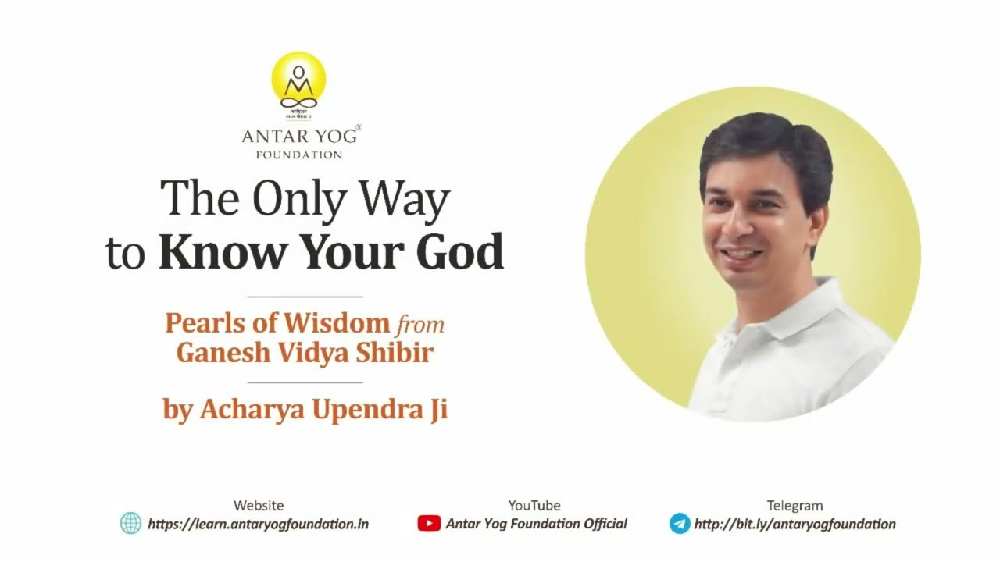

क्या आपने कभी सोचा है कि आप जिस ईश्वर की पूजा करते हैं, उसे आप सच में जानते भी हैं? हम रोज़ दीप जलाते हैं, आरती करते हैं, मूर्ति के आगे सिर झुकाते हैं। पर यदि कोई पूछे, "वह कौन है, उसका असली स्वरूप क्या है?", तो उत्तर क्या होगा?
इस प्रवचन में गुरुदेव एक सीधी पर गहरी बात कहते हैं: मर्म जाने बिना किया गया पूजा-पाठ अर्थहीन है। और इसे समझाने के लिए वे दो सरल उदाहरण देते हैं: एक विवाह का, और एक मानचित्र का।
क्या आप एक चित्र से विवाह कर सकते हैं?
मान लीजिए आपको विवाह करना है। विवाह यानी एकत्व (oneness), दो का एक हो जाना। इसीलिए पति-पत्नी को एक-दूसरे का अर्धांग कहा जाता है, जैसे अर्धनारीश्वर का स्वरूप।
अब कोई आपको इंटरनेट से उठाया किसी अनजान व्यक्ति का एक चित्र दे दे, या एक मूर्ति, और कहे, "यही तुम्हारा जीवनसाथी है, इसी के साथ रहो।" न नाम पता, न ठिकाना, न यह कि वह कैसा दिखता है।
क्या आप उससे एकरूप हो सकते हैं? क्या उससे प्रेम या विवाह संभव है? और यदि कोई उस चित्र के ही प्रेम में पड़ जाए, तो क्या वह पागलपन नहीं?
चित्र के आगे भी एक यात्रा है
स्वाभाविक मार्ग यह है कि चित्र देखने के बाद आप परिचय मांगें। वह कौन है, क्या करती है, कहां रहती है, परिवार में कौन है। फिर आप मिलने जाएं। फिर विवाह हो, साथ जीवन शुरू हो, और उसी मिलन से अगली पीढ़ी आए।
चित्र केवल शुरुआत है। जो चित्र पर ही अटक गया, उसका मिलन कभी नहीं होगा।
कहीं हम भी चित्र पर ही तो नहीं रुके?
यहीं गुरुदेव हमें आईना दिखाते हैं। हम कहते हैं, "मैं गणपति से प्रेम करता हूं, लक्ष्मी जी से, हनुमान जी से।" पर वे कौन हैं, उनका असली स्वरूप क्या है, यह न देखा, न जाना। गुरुदेव कहते हैं कि यह हमारी मूर्खता है; हम मानें या न मानें, हमें अपने भगवान को जानना चाहिए।
जिससे हम मांग रहे हैं, वह क्या है, यह तो पहले समझना चाहिए। किसी अनजान का चित्र देखकर जो होता है, वह अधिक से अधिक आकर्षण (infatuation) है। प्रेम नहीं, और मिलन तो बिल्कुल नहीं।
आप जिसके आगे रोज़ सिर झुकाते हैं, क्या आप उसके अर्थ को भी जानते हैं, या केवल उसके रूप को?
संत मूर्ति-पूजा क्यों करते थे?
इसका अर्थ यह नहीं कि साकार (रूप वाले ईश्वर) की पूजा गलत है। रामकृष्ण परमहंस काली की पूजा करते थे। तुकाराम और नामदेव "पांडुरंग, पांडुरंग" पुकारते थे।
अंतर यह था कि वे उसका मर्म जानकर करते थे। उनके लिए मूर्ति एक प्रतीक थी, पहली सीढ़ी। उस अवस्था तक पहुंचने के बाद मूर्ति-पूजन की आवश्यकता ही नहीं रहती।
पर यह रहस्य आपको बताएगा कौन? वे संत तो समाधि में चले गए। यह कोई जीवित गुरु ही बता सकता है।
जिसने देखा है, वही बता सकता है
जब कोई आपके लिए रिश्ता लाता है, तो वह बताता है, "लड़का छह फुट का है, नौकरी करता है, मैंने उसे देखा है।" वर्णन वही कर सकता है जिसने देखा हो।
इसी तरह, जिसने ईश्वर का अंतिम स्वरूप देखा है, वही उसका वर्णन कर सकता है। इसलिए किसी संत या गुरु के पास जाकर पहले वह विद्या समझनी होगी, विधिवत दीक्षा (initiation) लेनी होगी। संत मूर्ति को अस्वीकार नहीं करते; वे कहते हैं, चित्र के बाद मूल तक भी जाओ।
शास्त्र का संकेत: रूप साधकों के लिए है
शास्त्र ने यह बात पहले ही कह दी है:
चिन्मयस्याद्वितीयस्य निष्कलस्याशरीरिणः।
साधकानां हितार्थाय ब्रह्मणो रूपकल्पना॥
"जो ब्रह्म चेतन, अद्वितीय, निराकार और अशरीरी है, उसके रूप की कल्पना साधकों के हित के लिए की गई है।"
(रामपूर्वतापनीय उपनिषद् १.७, प्रचलित पाठ)
साधक वह है जो अभी जीवन को साध रहा है, स्वयं को शुद्ध कर रहा है। साधु वह है जिसने जीवन साध लिया, जो हर पहलू से शुभ है, जिस पर किसी चीज़ का रंग नहीं चढ़ता। साधक को साधना ऐसे गुरु से लेनी होती है जो स्वयं गंतव्य तक पहुंच चुका हो।
मानचित्र पर उंगली रखने से काशी नहीं पहुंचते
साधक सीधे वहां नहीं पहुंच सकता, इसलिए उसे एक मानचित्र दिया जाता है। मान लीजिए मानचित्र पर आपने मुंबई से काशी तक उंगली रख दी और कहा, "देखो, मैं पहुंच गया!" यह उपलब्धि है या पागलपन?
फिर भी मानचित्र व्यर्थ नहीं है। उसी के सहारे पता चलता है कि कहां मुड़ना है, कहां नहीं। गुरुदेव कहते हैं कि केवल मानचित्र भी व्यर्थ है, पर बिना मानचित्र के कठिनाई है।
बिना मानचित्र के आप किसी भी दिशा में भटक सकते हैं। गांधारी की तरह आंखों पर पट्टी बांधकर, गोल-गोल घूमकर स्टेशन खोजने निकलें, तो अरबों में एक बार संयोग से पहुंच भी जाएं, पर बाकी अनंत स्थान हैं। लाखों जन्म बीत सकते हैं।
इसलिए अंधश्रद्धा नहीं चलेगी। आंखें खोलकर, मानचित्र के साथ चलना होगा।
मूर्ति मानचित्र है, गुरु चालक है
मूर्ति आपका मानचित्र है। पर मानचित्र में यह नहीं दिखता कि रास्ते में गड्ढे कहां हैं। आज कहीं पुल गिर गया हो, तो नया रास्ता लेना पड़ सकता है।
इसीलिए जीवित गुरु चाहिए, यानी आज का चालक, जो जानता है कि आज कौन सा संकेत चल रहा है और कौन सा नहीं। हर यात्रा में नई कठिनाइयां आ सकती हैं, इसलिए जब तक आप स्वयं कुशल चालक नहीं बन जाते, आपको चालक और मानचित्र दोनों की ज़रूरत होगी।
मानचित्र हैं आपके शास्त्र: पुराण, ग्रंथ, उपनिषद। चालक है आपका गुरु। ये दोनों मिलकर आपको एक बार वहां पहुंचाते हैं। फिर आप जितनी बार चाहें यात्रा करें, समाधि में जाएं, वहां रहें, पूजा करें।
आपके जीवन में मानचित्र तो है, पर क्या कोई चालक भी है जो आज का रास्ता जानता हो?
चमत्कार को नमस्कार नहीं
जब आप सही ढंग से नमन करना सीख जाते हैं, तो बाकी अपने आप होता है। गुरुदेव कहते हैं कि चमत्कार को नमस्कार मत करो, नमस्कार ठीक से करो, चमत्कार अपने आप होंगे।
रूप काल्पनिक है, अर्थ सत्य है
जो संत, गुरु और अवतार उस अवस्था तक पहुंचे, उन्होंने देखा कि हमें वह अवस्था दिखती नहीं, जैसे यहां से काशी या लंदन नहीं दिखता। इसलिए उन्होंने हमें एक मानचित्र बनाकर दिया। यही रूपकल्पना है।
गणपति का यह रूप असली नहीं, पर गणपति का अर्थ असली है। वह निराकार होकर सबमें व्याप्त है, और वही सत्य है। असली काशी भी है और मानचित्र पर बनी काशी भी। पर मानचित्र अंतिम नहीं है।
मुख्य बातें
- मर्म जाने बिना किया गया पूजा-पाठ अर्थहीन है; केवल रूप से प्रेम आकर्षण है, मिलन नहीं।
- मूर्ति और साकार पूजा पहली सीढ़ी है; संत इसे मर्म जानकर करते थे।
- जिसने ईश्वर का स्वरूप देखा है, वही उसका वर्णन कर सकता है; इसलिए जीवित गुरु से दीक्षा आवश्यक है।
- शास्त्र मानचित्र हैं और गुरु चालक; केवल मानचित्र भी व्यर्थ है, पर बिना मानचित्र के मार्ग कठिन है।
- अंधश्रद्धा नहीं, आंखें खोलकर चलना है।
- चमत्कार को नमस्कार नहीं, नमस्कार ठीक से करो, चमत्कार अपने आप होंगे।
- रूप काल्पनिक है, उसका अर्थ सत्य है; मानचित्र के सहारे, गुरु के साथ, मूल तक पहुंचना है।
